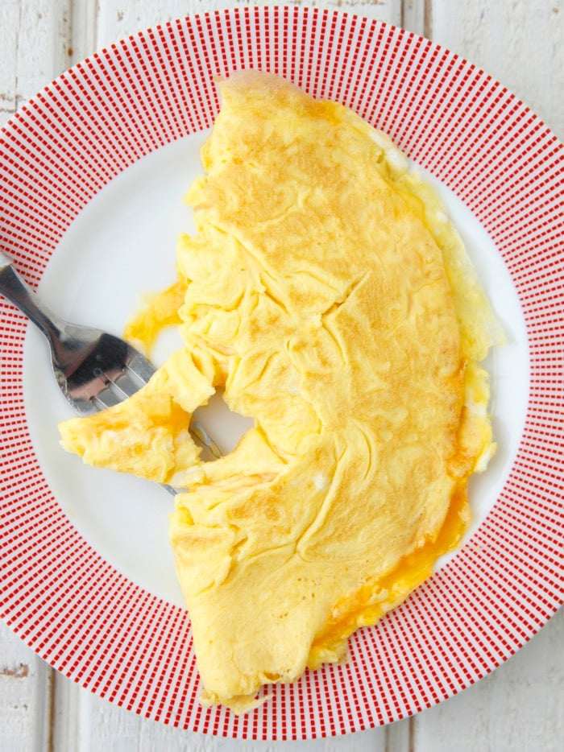

Cheese omelette

Ingredients
- 2 large eggs
- Olive oil
- 10g cheddar cheese
- Salt
- Black pepper
Directions
-
Crack the eggs into a mixing bowl, season with a pinch of salt and black
pepper. Then, beat well with a fork or whisk until fully combined.
-
Place a small pan on a low heat to warm up.
-
Grate the cheese onto a plate, and set apart.
-
Add 1/2 tbsp of oil to the pan, then carefully pour in the egg mix.
-
Tilt the pan to spread the mix evenly, using a fork to swirl it around the
pan a little.
-
When the egg mix begins to cook and firm up, but is a little raw on the top,
sprinkle over the cheese.
-
Using a spatula, ease around the edges of the omelette, then fold it over
in half.
-
When it starts to turn golden brown underneath, remove the pan from the heat
and slide the omelette onto a plate.
Recipe taken from
Jamie Oliver.